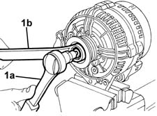
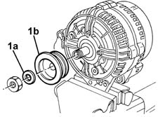
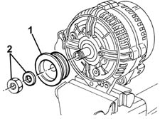
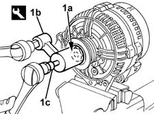
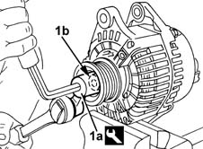
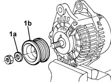
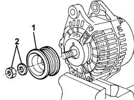
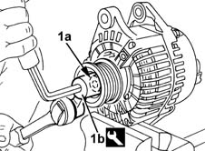

5530A30 alternator pulley or fan - r+r with alternator removed
- Path
- Procedures > 55 ELECTRICAL EQUIPMENT > 5530 CURRENT GENERATOR > 5530A alternator and components > 5530A30 alternator pulley or fan - r+r with alternator removed
- Kind
- repair procedure (removal / refitting; the operation number is the code)
- Applies to
- all engines; all production periods
- Interactive page
- https://sloeber94.github.io/elrnDB-fMltpl/en/#/2891909
Applies to: engines: 1.6 16v; all production periods
 Removing
Removing
 Refitting
RefittingFix the alternator in a vice at the bench.
1. Keep the shaft still using a spanner (1a) and undo the pulley fixing nut using the spanner (1b).

Applies to: engines: 1.6 16v; all production periods
1. Recover the washer (1a) and remove the pulley (1b).

Applies to: engines: 1.6 16v; all production periods
Refitting
RemovingCheck that the pulley and shaft are not damaged.
1. Reposition the pulley in the housing.
2. Reposition the washer in the housing and tighten the nut.

Applies to: engines: 1.6 16v; all production periods
1. Tighten the nut (1a) fixing the pulley, using the special tool (1b) and the attachment (1c), USAG 233 1/2" XZN.
 | Name | Country |
|---|---|---|
1b | Key | 1.860.973.000 |

Applies to: engines: 1.9 JTD 8V; all production periods
Removing
RefittingFix the alternator in a vice at the bench.
1. Use the special tool (1a) to keep the shaft still and undo the pulley fixing nut (1b).
| Name | Country |
|---|---|---|
1a | Key | 1.860.973.000 |

Applies to: engines: 1.9 JTD 8V; all production periods
1. Recover the washer (1a) and remove the pulley (1b).

Applies to: engines: 1.9 JTD 8V; all production periods
Refitting
RemovingCheck that the pulley and shaft are not damaged.
1. Reposition the pulley in the housing.
2. Reposition the washer in the housing and tighten the nut.

Applies to: engines: 1.9 JTD 8V; all production periods
1. Tighten the nut (1a) fixing the pulley, using the special tool (1b).
| Name | Country |
|---|---|---|
1b | Key | 1.860.973.000 |
